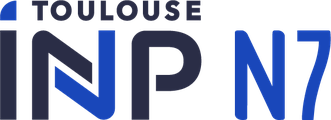
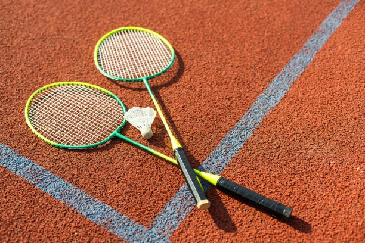

Programming
Python, C, Ada, Java, OCaml, VHDL, HTML and CSS
Systems & Networks Engineering Student
Second-year engineering student in digital sciences at ENSEEIHT, on the Systems and Networks Architecture track. I build and test network infrastructures — routing, VPNs, firewalls and services — and enjoy turning complex systems into clean, reliable designs.


ENSEEIHTToulouse INPAbout me
My journey started with an early interest in technology and problem-solving, and led me to study digital sciences at ENSEEIHT, one of the engineering schools of Toulouse INP.
Today I specialise in systems and network architecture. I like understanding how things work end to end — from routing protocols and encrypted tunnels to the services running on top — and proving it with tests.
My ambition is to innovate and contribute to the global tech community. For me, engineering is not only about science, but also about creativity, collaboration and impact.
Python, C, Ada, Java, OCaml, VHDL, HTML and CSS
Docker, Containerlab, FRRouting (OSPF, eBGP), WireGuard, nftables, DHCP and DNS, Nginx
UML design, Git and GitHub, agile teamwork with user stories and sprints (Scrum)
Selected work
Hands-on projects in networking and software engineering, from virtual infrastructures to object-oriented game design.
Autumn 2026 · Personal project, with Achraf Talhaoui
Two company sites reached through a simulated provider with eBGP, linked by an encrypted WireGuard tunnel, with DHCP, DNS, NAT and a firewall. Fully deployed and tested by scripts — 37 automated checks, all passing.
Read the case study →Semester 6 · Group project
A Java game in which the player moves a satellite from a point A to a point B. I worked in the core team, which wrote the model of the game following the MVC pattern.
Read the case study →Semester 6 · Individual project
Addressing plan, routing, customer boxes, web and DNS services and security for a small provider, built in a virtual lab.
Read the case study →On GitHub
The multi-site network project — topology, configurations, deployment script and automated tests — is public on GitHub.
Open repositoryTwo company sites linked through a simulated internet provider, all running in containers and described by a single Containerlab topology file.
A Java game in which the player moves a satellite from a starting point A to a target point B across a map of obstacles. Our long project for the Object Technology course.
The code is split into three packages that follow the MVC pattern: core for the models, interface for the view and the controllers, and utils for the shared classes. The core team wrote the model of the game, and we drew the UML class diagrams before writing the code.
Graphics.Maps are plain text files: the starting position, the budget, the initial speed, the target, then one line per obstacle. A registry links each keyword (MUR for a wall, SPHERE for a circular obstacle) to the code that builds it, so adding a new type of obstacle means adding one entry.
positionInitiale = 50.0 50.0 budgetInitiale = 1000 vitesseInitiale = 0.0 10.0 ciblePosition = 700.0 500.0 OBSTACLE = MUR 100.0 0.0 200.0 600.0 OBSTACLE = SPHERE 50.0 300.0 15.0 0.0 OBSTACLE = SPHERE 65.0 380.0 8.0 0.0 ...
private static final Map<String, ObstacleCreation> registre = Map.of( "MUR", data -> new ObstacleMur(data.position, data.fin), "SPHERE", data -> new ObstacleCirculaire(position, data.fin.getNorme()) );
public interface Collision {
boolean estEnCollision(Acteur acteur);
}
for (Obstacle obs : obstacles) {
if (obs.estDansObstacle(this.projectile)) {
obs.eventAction(this.projectile);
}
}
Together, the two teams delivered a main menu, a map selection screen, the game window and an editor mode. In the game, the player holds the mouse button to choose the direction, then launches the simulation. In the editor, obstacles are placed on a grid. Our main difficulties were redundant data between the editor and the model, and keeping the design easy to extend.
We organised the work with GitHub Projects: user stories, a prioritised backlog and assigned tasks. A Scrum master led a retrospective after each sprint. Planning the UML in advance and using GitHub Projects were our strengths. Merge conflicts and the visibility of everyone’s progress were the hard parts.
Use of AI: we declared it in our reports, for transparency. It helped with the graphical integration (Java Graphics) and the design of the menus.
Design and configuration of a small provider and its services in a virtual environment, for the Networks course.
The work was assessed in an intermediate review and in a final demonstration followed by an oral.
Education
The courses I have followed at ENSEEIHT, semester by semester. This page is updated after each semester.
Personal project this semester: multi-site virtual network.
Projects this semester: Gravity Bot and the simplified internet service provider.
Alongside these: soft and human skills (English, German, sport, careers and management). Programming languages used: Python, C and Ada.
Going global
International experiences are essential for my academic and personal growth. I aspire to study or work abroad to discover new cultures, develop adaptability, and build a global perspective on technology and innovation.
Japan fascinates me with its strong balance between tradition and technology. I admire how Japanese culture values discipline, teamwork, and innovation, all essential qualities for an engineer. Studying in Japan would also allow me to experience advanced robotics, AI, and digital systems firsthand, while exploring a rich and respectful culture.
The USA represents the heart of global innovation and entrepreneurship. I would love to study or work there to develop my skills in cutting-edge technologies such as artificial intelligence and data science, and to experience a fast-paced, ambitious environment that pushes me to grow as both a student and a professional.
Canada attracts me for its cultural diversity, inclusive society, and excellent universities in the field of digital sciences. I appreciate the strong emphasis on collaboration and research there, which matches my vision of innovation through teamwork and open-mindedness.
Community
I take part in environmental and social initiatives, such as awareness campaigns and volunteer activities at ENSEEIHT.
Integration week
During the integration week, I attended the theatre play “King Kong”, which raised awareness about sexual and sexist harassment. It was a powerful and emotional performance that highlighted the importance of respect, equality, and solidarity within our community.
7 October 2025
I attended the event “L’Hiver Sera Chaud”, which promotes social engagement, inclusion, and environmental awareness. It was an inspiring opportunity to connect with motivated students and organizations working towards a fairer and more sustainable world.
Beyond the classroom
Sports and hobbies are an essential part of my student life. They help me stay healthy, focused, and creative.
I love playing football with friends and classmates. It’s a great way to stay active, improve teamwork, and release stress after classes.

Badminton asks for quick footwork, anticipation and precision, and it is another way to stay active with friends.

Ping pong helps me improve focus, reflexes, and precision. I often play during breaks at school with classmates.
Cooking is one of my favourite hobbies outside of studies. It allows me to be creative and share good moments with friends.
Career Development
My career goal is to become a digital systems engineer, contributing to innovation in technology, networks, AI or embedded systems. Feel free to download my CV or reach out.